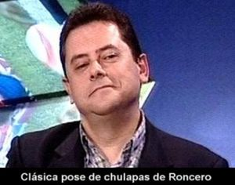

Anexo:Profecías de Tomás Roncerdo
 De: La Frikipedia, la enciclopedia extremadamente seria.
De: La Frikipedia, la enciclopedia extremadamente seria.
Esta es una recopilación de los pronósticos fallidos y/o gafazos de Tomás Roncerdo.
 Típica pose de chulapas de Roncerdo, creyendo que acertará su pronóstico.
- "El glorioso Real Madrid resurgirá de sus cenizas y volverá a infundir miedo en el corazón de sus rivales" (palabras reales).
- (24-7-03): "Existen dos argumentos de peso para vaticinar que el Madrid levantará en Gelsenkirchen la Décima" (anda que no tuvo que esperar ni nada para la Décima).
- (2-6-04) "Ronaldinho tiene las horas contadas" (las horas de 5 años que estuvo en el Barça).
- (12-11-04) "Le veo ganando el triplete..." (va a ser que no).
- (8-12-04) "El Madrid irá a Estambul" (va a ser que no).
- "Samuel se trata, sin duda, del mejor central del mundo" (Samuel fue echado del Madrid a la temporada siguiente de su fichaje después de ser tildado de peor central de la Liga).
- "Robinho será en poco mejor jugador que Ronaldinho" (Ronaldinho ganaría ese año el Balón de Oro, FIFA World Player y demás trofeos internacionales de prestigio, además de Liga y Champions; Robinho acabó
chupando banquillo, como debe ser de suplente en el Mandril).
- "El Barcelona está asustado, porque sabe que tiene enfrente al mejor equipo del mundo, al mejor equipo de la historia, y contra ese escudo no puede luchar" (El Barcelona ganaría dos días después por 0-3 al Mandril, entre los aplausos del público blanco).
- (26-5-05): "Lo siento Ronaldinho; ganará Madrid 2012".
- (26-9-05): "Mira, la Champions es nuestra competición natural y Ronaldo, como es el único título que le falta y estamos en año de Mundial, se va a salir con tal de ganarla. Es el año de la Décima. Se acabó la minisequía de títulos" (año en blanco).
- "(A un lector) Amigo, te garantizo que con Baptista, Pablo García y Diogo, el Madrid no solo será el equipo que mejor juegue con la pelota sino también el que mejor juegue sin ella" (Baptista, Pablo García y Diogo han sido vendidos/cedidos y el Madrid no juega ni con, ni sin la pelota).
- "Me gusta López Caro, con su mano estoy convencido de que ganaremos la liga" (El Barcelona ganaría la Liga con la mayor diferencia de puntos respecto a un segundo clasificado en mucho tiempo. López Caro fue cesado)
- "Este es el año de la Décima, no hay duda, el Arsenal hoy por hoy no es rival para el todopoderoso Madrid de Robinho" (El Arsenal eliminó al Madrid y llegó a la final, donde perdió con el Barcelona).
- (13-1-06): "Grande J.R. López Caro saldrá barato. Lo dije, más por un acto de fe que por convicción, tras su debut en Atenas. Me tiene ganado para la causa. Pasado un mes, hay que rendirle pleitesía". (Dos meses después, Roncerdo clama por su marcha [1]. Caro duró 6 meses sin ganar nada).
- (14-1-06): "Iremos a La Cibeles. La Cofradía del Clavo Ardiendo: "Ganaremos Champions y Copa" (cero patatero).
- (17-3-06): "Wenger diría ahora "oui" al Madrid" (a día de hoy, Wenger sigue en el Arsenal).
- (20-4-06): "Ancelotti quiere reunir a Henry con Ronaldo" (Ancelotti llegaría ocho años más tarde, a Henry aún se le espera).
- (6-6-06): "El dinero no es problema. Figo y Zidane costaron 27.000 millones de pesetas y nos regalaron un trienio inolvidable. Messi, ponte a calentar. El Bernabéu debe reabrir ya la frontera a los argentinos. Pibe, con Ronaldo harás una pareja de lujo" (a día de hoy, Messi sigue en el Barcelona).
- (29-6-06): "Este chaval va a ser el Etoo blanco" (a día de hoy, Cesc juega en el Chelsea).
- (21-2-07): "Me apuesto tres a uno a que el Madrid se mete en cuartos de la Copa de Europa" (pues no).
- (1-7-07): "No olviden que la Séptima se ganó con acero germano: Illgner y Heynckes. La Décima llegará con Schuster y Metzelder".
- (14-2-08): "Drenthe, como Robinho, no vino para triunfar en dos meses, sino para quedarse en el Madrid varios años. Es vertical, posee desborde y Schuster sabe llevarle con mano firme. Royston será un gran fichaje. Créanme" (Después de comprobar que fue un enorme fiasco, el Real Mandril tuvo que regalar a Drenthe).
- (29-3-08): "El Bernabéu acogerá la Undécima" (y entonces se despertó de su sueño).
- (16-9-08): "La bandera que llevará a la Décima" (seguimos esperando).
- (14-12-08): "¿Manita? Las casas de apuestas se van a ahorrar mucho dinero con todos aquellos que se dejaron media paga de Navidad apostando por una goleada (5-0, 6-1...). A falta de ocho minutos para el final, el Camp Nou era un funeral con 96.059 fieles a la religión azulgrana aturdidos por un 0-0 que no entraba ni en la peor de sus previsiones. Lo siento por tanto agorero (excepto Guardiola, un señor de los pies a la cabeza), pero al final ni venganza por el pasillo, ni baño, ni manita, ni ná de ná..." (Tan sólo dos años después, el día 29-11-10, llegó esa manita, dejando a Roncerdo como un auténtico visionario).
- (24-02-09) "Si Messi quiere ganar títulos debería fichar por el Madrid, pero como Laporta se inmolaría en la puerta 0 del Camp Nou antes que permitir ese traspaso será mejor mentalizar a Messi de que otro año será Balón de Plata por la falta de títulos ganados con su equipo" (Poco antes de que el Barça ganara el triplete).
- (16-04-09): "Parece mentira que un tipo tan viajado como tú no haya reparado en que lo del Barça es un festival de fuegos artificiales. Llevan dos Copas de Europa en 54 ediciones (una cada 27 años), mientras que el Madrid gana una cada seis (¡nueve!)... El globo culé pinchará y coleccionará subcampeonatos en mayo. El Chelsea les va a dejar medio groggy (y eso que Medina Cantalejo les ha ‘limpiado’ a Ashley Cole de la ida del Camp Nou) y ‘nuestro’ Cristiano Ronaldo terminará de hundirlos en la final de Roma. Les meterá dos chicharros y Messi sabrá por qué sólo es Balón de Plata. Esa noche, el portugués fichará por el Madrid. Será como ganar la Décima... (El Barça ganó Liga, Copa y Champions. Y decir que será segundo en la Copa del Rey... Otros ni jugaron los octavos...).
- En Lyon, un equipo muy físico, les va a someter a un ajusticiamiento durante 180 minutos, las van a pasar canutas, y aunque pasasen o no pasasen esa eliminatoria, que puede que no, porque Benzema les va a poner en su sitio, van a salir machacaos. Vale, tiramos de banquillo para ganar la liga y aguantar el Madrid que viene por detrás. Soluciones: Martín Cáceres, "Hache Leb", Silvinho, Pinto, Gudjohnsen; con eso no se puede ni heredar. Empezarán a perder puntos inesperados porque no hay banquillo, no hay soluciones y no hay físico. Tercer punto: el calendario que les espera, infernal. Dentro de dos semanas, el Calderón: Como ya está Abel y ya no están los resignados de Aguirre, Abel no entiende de gaitas antimadridistas y va a hacer una conjura ese día y ese día 3 puntos menos. Vamos a Mestalla: la última posibilidad de que Villa, Silva y companía se reivindiquen, y el valencianismo se va a unir, porque no se pueden permitir que queden hasta fuera de la UEFA. Otros tres puntos. Al Bernabéu. Con eso ya ni cuento, la diferencia no es diez, la diferencia es siete, porque este partido ya está ganado de antemano. Y aquí viene ese punto donde el partido va a ser clave. Son Moix. 17 de mayo. Ahí van a caer, por dos razones que es el punto 4. Eto'o y Laporta son del Mallorca. Qué ocurre, que hay dos venganzas: La de Eto'o por un lado, porque se siente del Mallorca, ese día no va a poder celebrar los goles ante el Mallorca, por lo tanto se va a dejar llevar por su corazón. Y Laporta, que va a tener el corazón partido por cuestiones de cartera. Entonces, si el presidente y el goleador están con el otro lado y el Madrid a dos puntos, en el cogote, desconcierto absoluto. Y viene el quinto punto donde se finiquitó la historia. Riazor. El deportivismo tiene memoria. En el año 94, el Barcelona primó a González. Y Dios castiga sin tierra ni palo. Y quince años después, ese Deportivo en Riazor, va a poner el Barça en su sitio, que va a ser un grandioso subcampeón de Liga" (El Barcelona ganaría pocos meses después el triplete, y ganaría al Madrid por 2-6).
- (22-2-09): "El Barça tiembla. Espanyol heroico. La Liga es blanca. Liverpool, la que te espera..." ([2]).
- (05-03-09): "Juande es el Miguel Muñoz del siglo XXI, el mago capaz de desterrar el mito de los guiris que vienen a llevárselo y a reírse de nuestra pizarra ibérica. De su mano, el Madrid va a ganarle esta Liga al mejor Barça de la historia. Y ojo, se guarda lo mejor para Anfield".
- (07-03-09): "Hoy ganamos 3-1 al equipo de Torres" (1-1).
- (09-03-09): "No se irá de aquí sin una Champions" (y se fue sin ella).
- (11-03-09): "La Décima tendrá que esperar. ¡Será en el Bernabéu, en la final de 2010!".
- El día antes del Madrid-Barcelona (02-05-09): "Así es el Madrid de siempre: irreductible. Hoy se acostarán a un solo puntito. ¡A por ellos!" Luego, en un canal de Televisión, pronosticó un "4-1 con gol de Raúl en el minuto 93 que arregla el goal-average", y hace mucho tiempo afirmó que "este partido está ganado de antemano" (El Barcelona ganó por 2-6 en una de las mayores goleadas de la historia, además de hundir todavía más al Madrid).
- Tras los fichajes de Cristiano y Kaká (12-06-09): "Hasta La Gazzetta se preguntaba ayer si habrá algún equipo capaz de parar a este Madrid. Sé que la euforia se paga caro. Pero la realidad es la que es. El madridismo está "trifeliz" y vislumbra una nueva era. Se acabó el barbecho. La próxima cosecha será la Décima..." (La misma Décima de cada año desde hace cinco, es decir, otro año más sin ella, y nosotros que nos alegramos).
- Un internauta le pregunta por qué defiende que el Balón de Oro debe ser para Cristiano Ronaldo y no para Messi cuando este lo ha ganado todo (20-10-09): "Amigo sólo te diré una cosa. En mayo Messi se hizo acreedor al Balón de Oro porque ganó todo y se salió. Pero desde mayo está en excedencia. Cristiano al contrario. Ha mantenido una línea regular todo el año y sólo la lesión ha frenado su temporadón. Se lo merece por su constancia. Messi ha sido flor de cinco meses. A Argentina la salvaron Higuaín y Palermo, no Messi..." (Messi ganó el Balón de Oro con la mayor diferencia de puntos de la historia del galardón respecto al segundo, que fue Su dios, CRNabo).
- El día después del Madrid 2-3 Milan (22-10-09): "Platinato. A Platini le pregunté antes del derrumbe que me gustaría saber su opinión sobre los cuatro penaltis hurtados al Chelsea en la semifinal con el Barça, y ni repitiéndoselo se dio por enterado. Si al final del partido le pregunto qué pasó con el penalti escamoteado al Madrid tras la doble falta de Zambrotta a Benzema, también me habría dicho lo mismo. Platini, tú como Villar. No engañáis a nadie..." (Lo que no dice es que en ese partido el árbitro anuló un gol legal al Milan).
- Un internauta le preguntaba si el Barça podía llegar a la final de la Champions del Santiago Bernabéu (27-10-09): "No, completamente seguro de que no. Los campeones de la Champions no reeditan su corona y lo normal es que el Chelsea, el Manchester, el Inter o el propio Madrid le acaben poniendo en su sitio. Llegará a cuartos o a semis, pero nada más. La final del 22 de mayo está reservada para el Madrid y un club inglés". Posteriormente, días antes del partido de vuelta contra el Lyon, pronosticó lo siguiente: "Cristiano 2, uno de Higuaín y uno de Raúl: 4-1, éxtasis y a casa" (El Real Mandril se fue a casa, efectivamente: empató a 1 y fue eliminado en octavos, para variar; todos los equipos ingleses fueron eliminados antes de las semifinales).
- (4-11-09, el día después del Madrid 1-1 Milan): "Platinato. Ya sé que el gol de Pato pareció legal, pero que me cuenten qué vio el jovencito Felix Brych, un alemán que nació en Múnich. O sea, que le tiene ojeriza al Madrid porque debe ser colega de Rummenigge, Hoeness y compañía. Pitó un penalti AXE a Pepe (el sobaquillo no debería ser nunca punible), perdonó un tarjeta a Ronaldinho por un plantillazo innoble y pasó por alto un faltón sobre Kaká, al que frieron a patadas los que fueron sus amigos de gozos y sombras durante años." (El penalty era penalty, no reinventes las normas, y el gol era legal, con lo cual gracias al árbitro no perdió el Madrid).
- Un internauta le preguntaba un resultado para el Madrid-Alcorcón (6-11-09): "No será tan sencillo como piensa casi todo el personal, pero mi apuesta habla de un 6-1, reeditando el famoso partido del Anderlecht de hace 25 años" (Resultado del partido: 1-0 y gracias. El Madrid queda eliminado después de hacer el enésimo ridículo).
- Un internauta le preguntaba veía a Raúl levantando la Décima en el Santiago Bernabéu (10-11-09): "Por supuesto. La historia hará justicia con el Capitán y se verá cumplido su sueño de levantar la cuarta Champions en el Bernabéu. El Madrid va a ir de menos a más y para mayo se verá su mejor versión, lo que se verá levantando su soñada décima" (El Real Mandril fue eliminado en octavos, como siempre desde 2004, y sigue...).
- El Barça se enfrenta al Inter jugándose seguir en la Champions (24-11-09): "De Raúl aprendió en la vieja Ciudad Deportiva un tal Etoo, con el que hoy vamos todos los madridistas. No soy hipócrita. Si esta noche marcase en el Camp Nou y apease al Barça de Europa, todos perdonaríamos sus pecados...". También dijo que "El Barça necesita a Messi esta noche porque si palma, que lo veo venir, puede firmar un ridículo sin precedentes: el campeón a la calle a las primeras de cambio". Resultado: 2-0 para el Barça, con baño incluido y sin que jugara Messi.
- (22-11-09): "La quiniela. Pese al tostón, esto me dicen para el Clásico del Camp Nou los amigos del Bar Casablanca de Valverde de Júcar (Cuenca) y las peñas de Torremejía (Badajoz), San Juan de Mieres y Palas (Asturias) y Ciudad Meridiana (Barcelona): "Tomás, jugando mal los tenemos a tiro. Con Cristiano será otra historia". Así será. Pongan ustedes un '2' en la quiniela..." (1-0 para el Barça).
- (3-12-09) "Cristiano es un espejo para la juventud y es bueno que se conozca esta faceta del crack. Cuida a su familia como a la pelota, atiende a todos sus fans cuando le reclaman un autógrafo o una fotografía y jamás elige la lírica antes que la física. Estamos ante un Supermán hecho a sí mismo. Un cuerpo 10." (Sobre todo, un ejemplo de cómo ser pedante, creído, egoísta, ególatra, chulo, prepotente, narcisista, desconsiderado con sus compañeros, cuentista, teatrero, mal perdedor, peor ganador, endiosado, etc.).
- Después de que Messi ganara el Balón de Oro (4-12-09): "El Palacio de Congresos se rindió al Príncipe del Fútbol. Cristiano no consiguió el Balón de Oro de France Football, pero sí se ha ganado el Premio AS, que lleva camino de tener más prestigio que el de la publicación francesa. El mejor jugador del planeta (para mí lo es, pese a quién pese) apareció en escena como un Ángel, con una sonrisa diáfana y sincera, que denotaba una salud de hierro, un tobillo a prueba de bombas y un estado de ánimo inmejorable para empezar a responder a esas expectativas que mantienen a medio mundo girando alrededor de cada paso que da. El portugués es mucho más que un futbolista. Es un ilusionista, una ventana abierta a la esperanza, un ejemplo de superación. En los barrios humildes de Funchal creció un genio, que se pulió en el frío de Manchester y alcanzará su punto de ebullición en Madrid, la ciudad de la que ya se ha enamorado." (La típica pataleta llorona en defensa de su Dios: Cristiano Ronaldo).
- Sobre el codazo de Cristiano a Mtiliga: "Queda claro que el danés (Mtiliga) se llevó un codazo en la nariz (aunque sin afán de hacer daño por parte de Cristiano) y que al final parecía que el culpable había sido él por poner su apéndice a tiro del brazo del crack." Palabras reales.
- (7-3-10) "¡Lyon, tiembla! El miércoles vuelven las grandes noches europeas. El Lyon no sabe lo que le espera" (le esperaba eliminar al Madrid).
- "Quiero disfrutar de la derrota del Barça en el Bernabéu" (ganó 0-2).
- "El Real Madrid está haciendo una obra de arte que va a pasar para la posteridad por ejemplarizante, el Real Madrid ha puesto en su sitio al equipo de la maravilla", "Lo siento, el Madrid va a ganar Liga y va a ganar Copa de Europa, y lo vais a tener que explicar", "El Barcelona no va a ganar nada y va a pasar de 6 [títulos] a 0", "Se va a bautizar El Dobletini, por Pellegrini" (el Madrid no ganó nada y el Barcelona la Liga).
- "El Barcelona este año pasado sólo ganó un título, no seis" (El Madrid estos dos años pasados sólo ganó cero títulos).
- Sobre el Madrid-Barça (09-4-10): "Mi pronóstico es un 3-2" (fue 0-2, y encima, después del partido afirmó que "El Barça no ha hecho un partido muy allá").
- "La culpa de que Di María no triunfara en el Mundial la tiene Messi. [...] Messi ha arrastrado a Argentina al fracaso. Messi es un fracasado" (Sin comentarios).
- (28-5-10) "Si Mou es capaz de cumplir todo lo que dice nos esperan unos años de esplendor [...] Esto pinta mou bien...".
- (26-6-10) "Ronaldo, eres una máquina y sé que la temporada que viene levantarás la Décima en Wembley con la sagrada camiseta blanca" (no aprende).
- (30-6-10) "Con Mourinho se acabó el chollo. Tómate la última y tíratela por la cabeza. ¡Se acabó la barra libre, que viene Mou!".
- "Mi sueño es cantar un gol de Raúl al Barça si se cruza el Schalke con ellos en la Champions" (tras fichar por el Carrusel Deportivo, 30-7-10. En fin, de ilusiones también se vive).
- (24-8-10) "Eres tan bueno, míster, que con dos "9" vas a ganar la Copa de Europa, la Liga y la Copa del Rey. Eres el terror de Guardiola. Hazme caso, Mou".
- (25-8-10) "Balance de Mou. El buen juego ya llegará, pero con Mourinho han vuelto las copas. Su Madrid levantó la del homenaje a Beckenbauer, la del Standard de Lieja, la del Ciudad de Alicante y el Trofeo Bernabéu. Cuatro copas en dos semanas. Es el poderío del Moumadrid" (¿WTF?).
- (19-9-10) "Mou, olvídate de tu selección que ya tendrás tiempo de impartir cátedra allí cuando hayas ganado tres Champions y tres Ligas. Tu sitio es éste, vas a hacer historia y lo intuye una afición que está entregada a tu pasión por cambiar el discurso futbolístico de este país que llevaba dos años metido en el puente aéreo".
- (23-11-10) "Veo signos positivos que me permiten pensar que esto acabará bien. El regreso al Amsterdam Arena y que Benzema marcase el otro día en Wembley, el escenario de la final del 28 de mayo... Y el factor Mourinho que no cesa. Este hombre acabará con la hemorragia europea de los últimos años".
- (27-11-10) "Messi nunca lo dirá con la voz alta, pero al final le pasará como a Maradona. Será un futbolista frustrado porque al no jugar nunca con el Madrid siempre notará que le ha faltado algo en su carrera para llegar al Everest del Fútbol. Fíjate qué Mundial más decepcionante hizo en Suráfrica. Al final, el estigma segundón del Barcelona no te lo quita ni siquiera el Balón de Oro. Y por si fuera poco, a La Pulga se le ha cruzado un ogro con una pizarra en la mano que se llama Mourinho. El portugués le tiene acomplejado y Messi jamás fue capaz de hacerle un gol a sus equipos. Este lunes nada de esto cambiará...". (El gol de Messi a Mou llegó el 16-04-11).
- (28-11-10) "¡Id preparando ya los nuevos aspersores!" (XD).
- (29-11-10) "Llegó el gran día: hoy nace el 'Camp Mou'". "Estoy convencido que van a quedar 1-2, tras un partido durísimo e intenso en el que el Madrid va a sacar todo su oficio", "Vamos a meter uno de Özil y uno de Cristiano de tacón y en el minuto 89; y a poder ser, no me importaría que fuera en fuera de juego", "El duelo en los banquillos lo tienen ganado Mourinho de antemano" (Resultado del partido: 5-0).
- (Tras el 5-0): "Han cometido un error, han despertado a la fiera" (el Barça ganó la Liga y la Champions).
- (12-12-10): "Dos que os vamos a meter en la final de Wembley, que es la Décima, así: las dos manitas".
- (1-2-11): "A mí el Barça no me da miedo, sólo respeto. Primero nos vemos en Liga (16 de abril) y cuatro días después en la final de Copa, siempre que mañana consumemos la clasificación para la final ante ese Sevilla de mi amigo Manzano que será correoso y duro de pelar. Me motiva medirme al Barça varias veces en abril. Ojalá que también en la Champions. A mí no me dan ningún miedo" (¡Y en Champions! Ten cuidado con lo que deseas...).
- (8-2-11): "Un Messina de perfil duro hará un Madrid más grande. Le veo el domingo ganando la Copa" (El F.C. Barceló ganó por 60-68).
- (8-2-11): "Este Ettore huele a campeón" (un mes más tarde, Ettore Messina abandonaría el equipo a media temporada tras caer humillado en la Caja Mágica ante el Montepaschi Siena por 18 puntos).
- (8-2-11): "Quiero ver como el Madrid de Mourinho acaba con el ciclo virtuoso del Barça de Guardiola".
- (14-2-11): "Piqué: Cinco puntos, la manita, estamos a cinco puntitos, huy qué miedo, waka waka...".
- (15-2-11): "Yo conozco a la gente del Barça, ellos no pueden ganar la Liga dos veces el mismo año. Entonces, como ya la han ganado, ya lo único que les puede ocurrir es que la pierdan" (eso mismo dijo en la temporada 2008-09, y ya sabemos cómo acabó la cosa...).
- (20-2-11): "El Barça está totalmente desquiciado, ya no arrolla, la waka-crisis es un hecho, la línea es ascendente hacia el Madrid, el Madrid es ahora el que está ganando por KO, haciendo jugadas explosivas y volcánicas [...]" (todo eso dicho días antes de que el Madrid empatara 0-0 y el Barça ganara 0-3, quedándose a 7 puntos).
- (14-3-11): "A cinco puntos, vamos a ganar la Liga" (dos jornadas después, el Madrid pierde y se queda a 8 puntos del Barça).
- (20-3-11): "Barça, no sabes lo que te espera. En abril, chascos mil..." (Los chascos se los llevó él).
- "El Bernabéu se va convencido de que va a tender una final el 28 de mayo Madrid-Schalke 04" (¿estás seguro? ¿No será Barça-Manchester?).
- (8-4-11, dirigiéndose a los culés): "Vamos a acumular todo en 4 días: en la Liga, que no la esperábais pero vamos a ganar, porque ya que venís de cachondeo y con los suplentes, vamos a ganar a vuestros nenes; en la Copa, en honor al Rey, porque como Catalonia is not Spain y os da igual, pues vamos a ganar nuestra Copa de España, por qué no; y os vamos a ganar en la Champions, porque Mourinho sabe de eso, y ya sé que vais a preparar los aspersores; y de ahí nos quedamos, y cogemos Canaletas y nos vamos a Sant Jordi, los Españolitos que vamos a animar a nuestro Real Madrid, vamos a ganar también la Final Four. 4+1. ¡Cinco! Los cinco grandes retos del madridismo en el mes de abril, jajajaja. ¡La manita! ¡Y cuando ganemos la Décima, serán dos manitas!" (Eliminados de Champions y sin Liga, Mou empieza a saber de eso también, y ridículo en la Final Four).
- "Cuando nos veáis en Wembley os lo vais a comer con patatas, y yo hablo muy en serio" (pues va a ser que no).
- (12-4-11): "Mi corazón me dice que ganamos [el Real Madrid] los cuatro [partidos contra el Barça] y mi cabeza me dice que ganamos el sábado y en Valencia, y que en la Champions perdemos en el Camp Nou por 1-0, pero como ganaremos en la ida en el Bernabéu por 2-0... Pues eso. Pleno al 4" (al menos, esta vez acertó uno...).
- (13-4-11): "Yo me veo en mis sueños celebrando la victoria este sábado, a Iker levantando la Copa ante el Rey en Valencia y eliminando el 3 de mayo al Barça en el Camp Nou, aspersores incluidos. ¿Por qué no? Esto el Madrid. Impossible is nothing…" (Impossible is Champions, más bien).
- (14-4-11): "Guardiola debe estar preocupado a estas horas. El Madrid llega a la cuádruple cita con la moral por encima de la cumbre del Everest y el Kilimanjaro. El madridismo es un torrente de ilusión incontenible. El Barça no tiene la culpa de lo que le espera. Llega la hora de soñar despierto. Apuesten al blanco. Háganme caso..." (hagánle caso y perderán el dinero que apuesten).
- (15-4-11): "El sábado a las 12 nos vamos a poner a 5 puntos y vamos a ganar la Liga, va a haber muchó canguelo en Barcelona", "Mañana empieza la Reconquista", "Mi porra es un 2-1" (fue 1-1). "El Barça no va a ganar el triplete" (el que seguro que no lo gana es el Real Mandril).
- (16-4-11): "Lo siento culés, vamos a ganar, la vida es dura, 3 os vamos a meter" (que no, que empataron y el Real Mandril perdió la Liga).
- (27-4-11): "Bernabéu de locura. La afición del Madrid está eufórica por recibir como se merecen a los flamantes campeones de Copa. El ambiente será alucinante con 75.000 banderas blancas y un tifo gigante en el fondo sur con este lema: "Vivimos por ti, vence por nosotros". Además y ya que estamos en territorio Champions (o sea, el nuestro), la grada hará sonar a coro esta noche la nueva canción de moda, que ya arrasó en la final de Valencia hace una semana: "¡Cómo no te voy a querer, cómo no te voy a querer, si fuiste campeón de Europa por novena vez!". Esta letra necesitará arreglos musicales si en los próximos 180 minutos se cumple lo que dicta la lógica, os apartamos del camino y llegamos a la final de Wembley: ¡Décima a la vista! [...] Raúl, te quiero. Anoche se le puso cuesta arriba a Raúl ver cumplido su sueño de jugar la final con el Schalke. Nada es imposible, pero si cae ante los red devils en Old Trafford será con grandeza. Tu Madrid ganará hoy 2-0 en tu honor. ¡Eterno capitán!" (esta vez acertó el número de goles, lástima que fueran del F.C. Barceló: 0-2).
- (30-4-11): "El Bernabéu quiere ver buen fútbol" (no sólo no lo vio, sino que su Real Mandril perdió 2-3).
- (1-5-11): "¡Al Camp Nou!. El Madrid nunca se rinde y el martes debe ir a por todas a Barcelona [...] Sueño con un 1-3 en el Camp Nou. El que ríe el último, ríe mejor..." (Y el Barça rió el último...).
- (2-5-11): "Ni el black & decker del silbato podrá evitar el soñado 1-3" (1-1, no estuvo mal...).
- (6-5-11): "Ahora sueño con Llull y compañía levantando la Novena en el Sant Jordi" (el Madrid perdería por 19 puntos contra el Maccabi Tel Aviv en el primer partido de la Final Four).
- (7-5-11): "Forza pericos. ¿Alirón hoy del Barça? Va a ser que no. El Espanyol ya nos ayudó a ganar la Liga de Capello con el heroico gol de Tamudo. Y hoy necesitan los tres puntos para quedarse a un punto de la Europa League, por lo que no descarto su victoria en el Camp Nou con gol de Osvaldo. ¿Y si el miércoles el Levante le saca un empate y el Madrid se pusiera a tres puntos? ¿Y si el Depor, que se juega la vida, empata en el Camp Nou y el Madrid se pone a dos puntitos cuando llegue la última jornada? ¿Y si un gol del amigo Baptista le derrota en La Rosaleda, resurge el espíritu de Juanito y se lía la marimorena? Déjenme soñar. En realidad, anoche el Madrid de Mou me alimentó todas esas fantasías que, no me lo nieguen, son perfectamente verosímiles. ¡Y qué bonito sería, diantre!" (El Barça ganó la Liga 4 días después).
- (7-7-11): "Como la pela es la pela y Rosell ha recortado gastos hasta quitar de las oficinas las fotocopias en color para hacerlas en blanco y negro, decidió hibernar el sueño del crack del Santos hasta 2012 en vista de que los 45 millones de su precio son ahora un muro imposible de saltar. Y en esas, apareció el Madrid. Con dinero y con la palabra del chico para firmar de blanco, aunque sea después de tumbar al Barça en el Mundialito de diciembre (posibilidad excitante, no lo olvidemos) [...] Entiendo la preocupación de Rosell por evitar lo inevitable. Llega tarde. Neymar jugará en el Madrid. Y él lo sabe mejor que nadie..." (y jugará en el Barça).
- (14-7-11): "Neymar va a marcar una época y el chico quiere escribirla en el Bernabéu. Me da igual ahora o en enero, tras quitarle al Barça el Mundialito de Clubes. Neymar será la gran estrella del Mundial de Brasil 2014 y ahí el Madrid no debe dejar escapar la presa. El Barça lo quiere para 2012 porque no tiene un duro ahora ni para pagar las fotocopias en color. A Florentino no se le va esta oportunidad. Neymar apunta al blanco. Sí o sí amigos" (Neymar renovó con el Santos, que perdió el Mundialito ante el Barça, y luego fichó por el Barça).
- (1-8-11): "Con Xabi, Coentrao, Khedira y Granero, el mediocampo del Madrid ya puede tutear al del Barça sin complejos. ¡Que llegue ya la Supercopa!" (Supercopa que ganó el Barça).
- (3-8-11): "Su compromiso se demuestra en las imágenes que he visto en la pretemporada. Ha vuelto más fuerte que nunca. Sus piernas de roca son dos símbolos: la Champions y la Liga. Cristiano, a tus pies".
- (7-8-11): "Barça, la que te espera", "...os noto asustados", "Me da que Guardiola tiene motivos para estar preocupado..." (resultado: 2-2).
- (14-8-11): "...vosotros tenéis al pobre Cesc yendo y viniendo al aeropuerto de Londres. Claro, le queréis mañana en Barcelona para desviar atenciones tras el 3-0 que os espera. ¡A por ellos, oé!" (Resultado: 2-2).
- (17-8-11): "Culés, preparad para esta noche los aspersores...", "espero que Cristiano, Özil y Benzema os fundan. Con Villarato o sin él" (y ganó el Barcelona).
- (29-8-11): "Afición eufórica. El madridismo ha recuperado la ilusión y sabe que lo mejor está por llegar. Hoy me acuerdo especialmente de gente como Toñín El Torero. Gente que nunca se rinde, como su amado Madrid. El futuro es blanco".
- (30-8-11): "Yo a Cibeles voy a ir cuando ganemos la Liga y la Décima".
- (1-9-11): "...Pero como esos colegas barcelonistas se han puesto pesados al tener que aceptar una realidad que parece ofenderles, voy a dejarles dos cosas muy claritas: 1) Si son tan buenos, que ganen esta temporada el Mundialito, la Liga y la Champions y así nos podrán superar en el score de la Sala de Trofeos. Y 2) En ese 73-71 para el Madrid hay una trampa. No se puede poner en la misma balanza una Supercopa de Europa que una Champions, por ejemplo. Aquí hay tres competiciones reinas que son las que dan prestigio: Champions (o Copa de Europa), Liga e Intercontinental (o Mundialito, como se llama ahora)".
- (8-9-11): "Arbeloa se tiró y no debe hacerlo. Pero si un error es para ayudar a España lo doy por bueno. España debe estar por encima de todo" [...] "Lo de Alves da para el Goya y para fichar por Els Comediants. Algún día se lo recriminarán hasta sus propios compañeros. Eso no es fútbol..." (viva el rigor y la objetividad).
- (9-9-11): "Por eso, me fastidia la cláusula anti-madrid que se le ha puesto a Pedro León esta temporada. ¿Tenemos miedo de un jugador al que hemos denostado, castigado y desterrado como al Conde de Montecristo en el sórdido castillo de la isla de If? El Madrid, por principio y por historia, no teme nunca a nadie" (Roncerdo despreciando a un antiguo jugador del Real Mandril y, como siempre, alabando el poderío del mismo).
- (13-9-11): "El rojo y Cibeles conjugan bien. Es una señal. Este precedente será recordado en la final del 19 de mayo en el Allianz Arena de Múnich" (yo creo que no).
- (15-9-11): "No es un gol más. Es el primero de la historia con la remera roja. Les dije que esta camiseta huele a Décima... Ganar a este Madrid va a ser labor de titanes. Lo digo bien alto. Es el gran favorito para levantar la orejona" (pues va a ser que no).
- (19-9-11, el día despues del Levante 1 - Real Madrid 0): "Villaratazo: Eso sí, la ración de Villarato no podía faltar a la cita. Pitaba Turienzo, el que masacró al Madrid en la Liga de Capello (2007) con un arbitraje en Santander que casi les deja sin título. Con 0-0, pasó por alto ayer un penalti de Iborra que además suponía la roja (ver foto). Con el Reglamento en la mano, el hasta ayer líder se ponía 0-1 y se restablecía la igualdad numérica. Pero eso a Turienzo y a los árbitros del Régimen Sánchezarminista no les interesa. No sé si es manía a Mourinho, a Florentino por lo de las Elecciones de 2004, a los periodistas de la caverna o al Sursum Corda, pero es evidente que pitan condicionados para no darle al Madrid ni la mano en el protocolo del intercambio de banderines. Penoso". Lo que no cuenta es que ese penalty venía de un córner que en realidad era saque de puerta y que el árbitro pasó por alto las piscinas de Ángel Di María, la violencia de (cómo no) Pepe...
- (19-9-11): "El miércoles volvemos a estar por delante, ganamos en Santander y el Barça pierde en Valencia. Vamos, visca Valencia. ¡Amunt Valencia!" (hubo empate en ambos partidos).
- (22-9-11): "Ese es mi Atleti, que le va a meter 3 al Barça en el Camp Nou. Los vecinos están para eso. El Atleti va a ganar y va a arrasar en el Camp Nou" (Resultado: 5-0 a favor del Barça).
- (11-10-11): "Hay otra encuesta que Ikerfel no pudo realizar. La de cada casa, cada bar, cada tienda, cada estación de tren, cada residencia de ancianos o de estudiantes. Allí se mama el madridismo con prudencia, de forma anónima. Forman un ejército silencioso que está expectante y que tomará las calles en cuanto llegue la Décima. En la Séptima salieron en España a la calle más de cinco millones de personas. Este país sigue siendo blanco y esa Champions soñada acabará con las dudas. No habrá encuesta que resista al subidón que provocará ese título anhelado. Se acaba el día y veo al madridismo más fuerte que nunca. ¡Volveremos!".
- (16-10-11): "Pero Vadillo, un crío de 17 años que huele a crack, tuvo mala suerte y su lesión devoró la osadía de los verdiblancos" (La lesión fue provocada por un empujón de Sergio Ramos).
- (18-10-11): "A Casillas le veo con un ojo puesto en la Décima [...] El madridismo anhela ver su foto levantando la Champions en Múnich" (me temo que no).
- (19-10-11): "Sergio, te mereces la Décima [...] Favoritos al título. Europa mira de reojo al Bernabéu [...] Este Madrid huele a Múnich..." (bueno, fue eliminado en semifinales por el Bayern de Múnich).
- (23-10-11): "El remate en su tercer gol pareció sacado de un baile de West Side Story. Su acrobático golpeo fue un movimiento de taekwondo llamado Mondollyo Chaky" (¿¿??).
- (4-11-11): "Cristiano es un valiente que jamás agacha la cabeza en territorio comanche. Al revés, se crece en la adversidad y el griterío. Por cierto, Messi lleva 13 goles en esta Liga. ¿Saben cuántos ha metido lejos del Camp Nou? Cero patatero..." (No habla de los goles de Messi al Real Mandril, de los que han marcado en la Champions, de los títulos de uno y otro, etc.).
- (7-11-11): "¡A tres puntos! El Barça se dejó otro empatito (Real Sociedad, Valencia, Sevilla, Athletic...) y ya están a tres del líder soberano de la competición. Si el Madrid no falla y logra que el Bernabéu le aúpe a la victoria en el Clásico de diciembre, nos iremos a comer el turrón y a cantar villancicos con el Barça a seis puntos. No sueño. Expongo lo que se ve venir. El Madrid aplasta a sus rivales. El Barça corre mucho y saca un empate cuando el rival se queda con 10. Qué domingo más feliz..." (El Barça ganó 1-3 al Madrid y la diferencia de puntos se quedó en 3).
- (16-11-11), respondiendo a la pregunta "¿Crees que es posible una manita en el clásico?": "Eso dijo Zamorano y con el Madrid nunca digas nunca jamás. Lo importante es que se vea un gran espectáculo y que el Madrid de Mou gane al de Guardiola y le demuestre que la tortilla se está dando la vuelta definitivamente" (el Barça ganó 1-3).
- (19-11-11): "La vida es dura. El problema es que estáis nerviosos [...] Y estáis a 3 puntos y estaréis a 6 dentro de 3 semanas".
- (20-11-11): "[...] una victoria merecida que huele a pre-alirón liguero. El Madrid venció en Anoeta y aquí, campos en los que el Barça se dejó cuatro puntos. Así se ganan las Ligas [...] Hasta Higuaín evitó el empate con el pecho desde el suelo [...] Este Madrid huele a campeón".
- (28-11-11): "El 10 de diciembre, el Barça a 9 puntos" (se puso líder).
- (4-12-11): "El 0-3 de El Molinón sitúa al liderísimo en rampa de lanzamiento para el Clásico más esperado. ¿Goleada al Levante? Mejor. El Barça será un dignísimo subcampeón de Liga... [...] Que venga el Barça ya. Estamos listos para el gran reto. Llegó la hora..." (la hora de perder 1-3).
- (8-12-11): "Ahora, a por el Barça [...] Qué ganas de que empiece a rodar ya la pelota por la pradera del Bernabéu. El Madrid está en su mejor momento de cocción para coger al campeón de Europa y de Liga y cambiar los roles de estos últimos años" (pues va a ser que no: 1-3).
- (9-12-11): "Tranquilo que los culés van a recibir su medicina a eso de las 12 de la noche del sábado, cuando se pellizquen y vean que es cierto que están a seis puntos del Madrid y la Liga se les ha puesto más empinada que la cumbre del Everest. Nuestro momento se acerca..." (mmmm... 1-3...).
- (9-12-11): "Mourinho va a acabar con la racha de Guardiola en el Bernabéu. Mou, tú puedes con Guardiola" (1-3, creo que ha quedado claro).
- (9-12-11): "Señores, el AS una vez más en rigurosa exclusiva [...] adelantando la portada que saldrá el próximo domingo glorioso: 4-3, partido para la historia, un clásico diferente, ganó el mejor; Cristiano clave, minuto 89, golazo; y Casillas en el tiempo de descuento, haciendo una parada antológica a Messi, salvando el clásico. Hasta Guardiola rendido al mejor Madrid que se ha encontrado nunca. Y este es no el cambio de ciclo, sino el nuevo ciclo, el ciclo que va a marcar el Real Madrid con el fútbol. Va por don Santiago Bernabéu" (1-3, Zas, en toda la boca).
- (10-12-11): "Hoy dormiré en un colchón de seis puntos" (1-3. ¿Hay colchones de 0 puntos?).
- (10-12-11): "Esta es la roca que vamos a levantar. Vamos a por ellos, a ganar. Sólo una palabra: ¡Victoria! [...] A este equipo ahora mismo no le echa el freno nadie" (1-3 ganó el Barça).
- (13-1-12): "El maleficio de la Décima cae, y por qué no decirlo, el de los Clásicos [...] Tenemos un pequeña problemilla con el Barça, y lo vamos a arreglar, creo yo [...] No hay mal que cien años dure" (ganó el Barça, otra vez, por 1-2).
- (23-1-12): "REMOUNTADA [...] Míster, a Barcelona se va a ganar y a dar la vuelta a la eliminatoria [...] Le veo firmando su gran noche frente a Pinto, al que ya le pintó la cara el miércoles en la única ocasión que tuvo [...] Y el miércoles, a hacer historia. ¡¡¡A por ellos, oé!!!" (2-2 y el Real Mandril eliminado).
- (24-1-12): "Al Camp Nou se va a levantar la eliminatoria y a morir de pie [...] Mou, suéltate el pelo. ¡REMOUNTADA!" (He dicho que 2-2 y el Real Mandril eliminado).
- (25-1-12): "Mi pronóstico: Prórroga y gol de Cristiano en fuera de juego en el último minuto" (Repito: 2-2 y el Real Mandril eliminado).
- (25-1-12): "Y yo voy más lejos. ¿Se imaginan una final de Copa entre el Mirandés y el Madrid? ¿Por qué no?" (Porque el Barça eliminó al Madrid).
- (29-1-12): "¿Pasillo en el Camp Nou?" (El Barça se puso a 4 puntos tres meses después).
- (22-2-12): "Héroe de la Décima. Ese papel está destinado para ese portugués insaciable [...] Cristiano suma 122 goles en 124 partidos. Le veo marcando en el Allianz Arena de Múnich el gol de la soñada Décima" (GAFE).
- Tras empatar contra el Villarreal en el Madrigal (22-3-12): "Paradas no nos echará de Cibeles: El tal Paradas Romero no fue el único culpable del empate de El Madrigal. El Madrid no jugó bien y Casillas pudo hacer mucho más en el gol de Senna. Pero el árbitro malagueño se cebó hasta el extremo de provocar un ataque de nervios colectivo que desembocaron el sainete del final del partido. ¿Por qué no expulsó a Marco Ruben pese a sacarle dos amarillas? ¿Por qué castigó con libre directo el lanzamiento de Altintop si fue juego peligroso y eso es indirecto (¡además levantó el brazo antes de lanzar Senna!)? ¿Por qué sacó amarilla a Pepe por decir que fingió si el labio le sangraba después de que se lo partieran? ¿Por qué expulsó a Özil y Rui Faria simplemente por aplaudir mientras que a Guardiola le permitió en Pamplona agarrar del brazo al cuarto árbitro y a Xavi correr detrás de él como un loco protestándole un gol bien anulado? ¿Por qué expulsa a Mourinho “por hacerme observaciones”, cuando hay árbitros que no paran de hacer observaciones y los árbitros compadrean con ellos? ¿Por qué el cuarto árbitro pertenece al Colegio Catalán? ¿Por qué? ¿Por qué? ¿Por qué? ¿Por qué?" (¿Por qué el árbitro se tragó dos penalties a favor del Villarreal? Eso no te lo preguntas).
- (1-4-12). "Mi cuñado Polin esta orgulloso de su Athletic. Normal. Les veo ganando la Europa League y la Copa al Barça. Equipazo" (el Athletic perdió las dos finales).
- (18-4-12): "Un 2-1 te deja a un ínfimo 1-0 que vale una final. Por eso no debe cundir el pánico... [...] Nos veremos todos en la Marienplatz el 19 de mayo" (me temo que no).
- (21-4-12): "Quiero al Barça en la final de Múnich. Así le volveremos a ganar y nadie más dudará de la jerarquía del mejor equipo del siglo XX... ¡Y XXI!" (lo mismo decía en 2010 y pasó lo mismo: ni uno ni otro).
- (25-4-12): "Se clasifica el Madrid. Habrán más de 2.5 goles en el partido y marcará Cristiano. El factor Bernabéu y el aliento emocional del Camp Nou convertirá al Madrid en un ciclón para el Bayern. Mourinho ya jugó dos finales de Champions como técnico. Ahora le llega la tercera" (el Bayern eliminó al Madrid).
- (25-4-12) "Esto huele a otra noche mágica, a REMOUNTADA. [...] La liturgia ambiental también incluirá el cántico recordando a Juanito en el minuto 7, el Cómo no te voy a querer, corear el nombre de Cristiano y un tema final que se entonará a pulmón si todo sale bien: "Sí, sí, sí, Múnich ya está aquí". Nadie lo duda. ¡Finalistas!" (Eliminados).
- (27-4-12): "Mourinho se ha comido a Guardiola [...] El Guardiola que yo conozco de su etapa de jugador no se rendía nunca, pero parece que teme a Mou y se huele que la próxima temporada le va a apartar de todos los títulos importantes [...] Mourinho le ha ganado la batalla. Mou sí que se queda" (se quedó un año más, pero se fue enseñándole el escroto y sin ganar ni la Copa Pescanova).
- (6-5-12): "Su alegría pasa por ser amado por el Bernabéu y levantar Ligas y Champions. Esto llegará en Londres en 2013" (con patatas).
- (12-5-12): "Pasarán muchos años y nadie podrá superar este récord" (igualado a la temporada siguiente).
- (16-8-12): "Este año, la Liga y la Champions van a ser blanquitas" (No ganaron ni la Copa Danone).
- (19-8-12): "Pero este Madrid de Mourinho es tan bueno que no descarten nada. Ni siquiera un resultado abultado" (1-1).
- (19-9-12): "Pero tranquilo, Sergio, tú también levantarás este año la DÉCIMA" (Nope).
- (26-9-12): "Morata es el mejor 9 joven de España. Será titular en la final del Mundial de Brasil. Escrito queda" (Morata no fue ni convocado y España no pasó de la fase de grupos).
- (1-10-12): "Lanzados hacia la A-5 [...] La afición se ve ganando en el Camp Nou y durmiendo el domingo a sólo cinco puntitos del Barça" (Resultado: 2-2 y siguen a 8 puntos).
- (3-10-12): "El Euromálaga y mi Madrid podrían jugar la final de la Champions en Wembley. Es mi sueño, mi deseo y mi pronóstico" (Ambos eliminados por el Borussia Dortmund).
- (3-10-12): "El Balón de Oro ya tiene dueño y habla portugués" (Messi ganó el Balón de Oro).
- (7-10-12): "Somos expertos en remontadas: ¿qué son ocho puntos? [...] La REMOUNTADA os aterroriza. Sabéis que somos capaces. Lo haremos. Sí". (No)
- (28-11-12): "Fernando Alonso ganará el Mundial en Brasil, aperitivo de lo que hará allí la España de Del Bosque en 2014. Escrito queda" (Ni una cosa ni la otra. GAFE).
- (14-12-12): "Hat-trick de Falcao a Valdés [...] Vais a ganar en el Camp Nou, vais a poner al Barça en su sitio" (4-1 para el Barça).
- (5-1-13): "En 2013 nos veremos en la final de Wembley. Huele a Décima" (a su casita en semis y el Bayern ganó la Champions de ese año).
- (5-1-13): "Melchor, trae esa Décima a los madridistas" (repito).
- (28-1-13): "Cristiano avisa al Barça [...] Pese a las bajas para el Clásico (la ausencia de Tarzán Ramos es dolorosa), la afición ve factible poner al Barça en su sitio este miércoles [...] Esto ha cambiado. No hay miedo a nadie. Y menos a Messi..." (1-1).
- (12-2-13): "Hay que ir a Wembley [...] En la Kangoo nos vamos a por la Décima" (repito).
- (14-2-13): "Toma gol de Morata. Cantera power" (dos años después, la Juventus elimina al Madrid de la Champions con dos goles de Morata).
- (28-3-13): "Mourinho tiene contrato hasta 2016. El es muy serio en las cuestiones profesionales. Respetará su firma. Se quedará. Bueno para el Madrid" (Mourinho se fue al Chelsea gratis).
- (2-4-13): "Mou, te quedas y punto. Firmaste hasta 2016. Si has hablado con otro club, mala suerte. El Madrid no es un kleneex de usar y tirar" (Mourinho se fue al Chelsea sin pagar un puto euro al Madrid).
- (7-4-13): "Esto huele a triplete" (Me da que no).
- (10-4-13): "¡Décima a la vista! Al que la sigue, la consigue [...] Ojalá nos toque el Borussia en semis. ¡Nos los comemos!" (Va a ser que no).
- (12-4-13): "Huele a histórico doblete en Europa con el Madrid de fútbol y basket. ¡A por ellos oé!" ([3]).
- (21-4-13): "Y con Cristiano caerá la Décima. Sí" (No).
- (23-4-13): "Desde que Xavi dijo que a este Barça se le recordaría como a los Lakers, más se parece a los Warriors." (Dos años después, los Warriors son campeones de la NBA 40 años después. GAFE).
- (24-4-13): "¿Que gana el Madrid? ¡Por favor! [...] El Madrid va a ganar [...] Que gane el Madrid ya lo damos por hecho [...] Hombres de poca fe, ¿Alguno piensa que Lewandowski va a poder con Cristiano?" (4-1 con póker de Lewandowski).
- (25-4-13): "¡Remontaremos!" (2-0 insuficiente para remontar).
- (28-4-13): "Estos son los cámaras ultimando detalles para grabar el último partido del Atleti en semis de Champions" (al año siguiente, el Atlético llegó a la final).
- (17-5-13): "Mou ganará esta Copa y será su cuarto título de blanco" (1-2 para el Atlético y Mou se pira).
- (17-5-13): "El Madrid ganará en casa 4-1. Será la noche de Cristiano, el Pichichi de la competición" (1-2 para el Atlético).
- (21-5-13): "Sólo le faltaba al Barça Luis Enrique en el banquillo. ¿Cuántas Copas de Europa ganó? Cero patatero" (Luis Enrique ganó la Copa de Europa en su primera temporada como entrenador del Barça).
- (8-6-13): "Temporadón del Castilla, mejor filial de España. ¿Dónde está el equipo de la Masía? Down (abajo, para los no anglófilos)" (el Castilla bajó y el Barça "B" terminó tercero al año siguiente).
- (25-9-13): "Hoy pita Muñiz, el árbitro de cámara del Barça. El Elche es un gran equipo y no necesita ayudas. Pero no me fío nada del belga-asturiano" (el Madrid ganó 1-2 al Elche con errores de Muñiz... favorables al Madrid [4]).
- (28-9-13): "14 años sin ganarnos a 90 minutos" (0-1 para el Atlético).
- (29-9-13): "Animo Castilla. Esta pesadilla terminará pronto" (el Castilla descendió. GAFE).
- (26-10-13): "Juega Cristiano: este Clásico de otoño está 'chupao'" (2-1 para el Barça).
- (3-11-12): "He visto repetido el golazo de Soldado. Maravilloso. La cantera del Madrid se sale" (tres años después, el Madrid pierde en Villarreal con un gol de Soldado).
- (1-12-13): "El liderato llegará después de los turrones. Lo verán todos ustedes".
- (14-12-13): "La mayoría profetizan hoy un triunfo por 1-3 del equipo de Ancelotti" (2-2).
- (22-12-13): "Toma y toma. También es culpa de la campaña el 2-0 del Getafe? El Barça de la triste figura..." (el partido terminó 2-5).
- (19-1-14): "Ya os dije que esta es una Liga de dos entre Madrid y Atleti. El Barça no cuenta" (el Madrid no cuenta, que fue tercero).
- (22-1-14): "Cuando no está el Getafe, Messi no marca" (dos meses después, Messi marcó tres goles al Madrid).
- (12-2-14): " No descarten la Triple Corona. Hay plantillón, un gran entrenador y una afición muy ilusionada. Y con Iker y Cristiano, todo es más fácil..." (al año siguiente, Triple Corona del Barça. GAFE).
- (11-3-14): "Felicidades al gran Juvenil del Madrid de Ramis. PUEDEN GANAR LA PRIMERA COPA DE EUROPA DE LA CATEGORIA. También reyes de Europa los niños" (el Barça ganó esa Copa de Europa).
- (16-3-14): "El Barça ha metido siete goles, los mismos puntos que le va a sacar el Madrid el domingo. Bieeeeeen" (sólo le sacó uno).
- (17-3-14): "Ganaremos al Barça 3-1" (3-4).
- (18-3-14): "¡Vamos a por el triplete!".
- (22-3-14): "Pasen y vean: Superman contra La Pulga" (3 goles de Messi por 1 de Cristiano).
- (22-3-14): "El Madrid va a ganar sí o sí o sí [...] 4-1" (3-4).
- (8-4-14): "¡Campeones, campeones!" (sin comentarios).
- (19-4-15): "A tragar, este año ni Champions, ni Liga, ni Copa" (Al año siguiente, el Madrid ni Champions, ni Liga, ni Copa. GAFE).
- (27-4-14): "Baño del Villarreal al Barça. Un equipo que naufraga de la mano de Messi, más conocido como 'el Mundialista'" (el Barça ganó 2-3 con gol de Messi).
- (18-5-14): "Esta tarde todos a muerte con el Madrid de basket. Casi dos décadas después, la gloria (y la Novena), nos esperan. ¡Vamooooos!" (el Maccabi ganó la final).
- (2-6-14): "El Madrid ganó en Mestalla la última Copa entregada por el Rey Juan Carlos. Un detalle de grandeza. En 2015 nos la dará el Rey Felipe. Bien" (el Madrid fue eliminado en octavos).
- (10-6-14): "Veo al gran @RafaelNadal ganando sobre la hierba sagrada de Wimbledon. ESCRITO QUEDA." (Nadal no llegó ni a la final).
- (11-6-14): "Este puede ser el Mundial de @SergioRamos. Escrito queda." (España fue eliminada en la primera fase con mala actuación de Ramos).
- (13-6-14): "Tenemos una estrella en el pecho. Saldremos adelante. ¡Vamos España! Los holandeses Van a Perder".
- (13-6-14): "¡¡Vamos España!! Desde el estadio Fonte Nova siempre con La Roja. ¡¡Nos comemos a los tulipanes!!" (Holanda ganó 1-5).
- (18-6-14): "Hay que luchar a muerte y pensar sólo en ganar a Chile. Lo del goalaverage lo miramos luego. Primero, GANAR O GANAR" (después de un pésimo partido España es eliminada y pierde 0-2 frente a Shile Ají).
- (28-7-14): "Para que conste en acta: el gran rival del Madrid para esta temporada vuelve a ser el Atleti. Ha fichado muy bien. El Barça no es rival..." (pues para no ser rival, le ganó la Liga).
- (13-8-14): "¡La primera del Sextete!" (pues va a ser que no. Y triplete del Barça).
- (25-8-14): "Dice Bartomeu que el rival del Barça en esta Liga es el Atleti. Estoy de acuerdo. La lucha de los dos por la segunda plaza va a ser bestial" (el Madrid fue segundo).
- (13-9-14): "Factor Cristiano. Dejémonos de temores y de rigores tácticos. Por muy armado que esté el Atleti, no hay antídoto para frenar al mejor futbolista del planeta [...] Estando enchufado, este equipo no tiene rival. ¡Hala Madrid y nada más!" (1-2 para el Atlético).
- (26-10-14): "Os aconsejo que tengáis AUTOCRÍTICA porque os esperan TIEMPOS MUY DUROS" (el Barça acabaría la temporada ganando el triplete).
- (6-1-15): "Messi se quiere pirar y ya pasa del Barça. Se le está olvidando ganar títulos" (cinco meses después, Messi y el Barça ganaron el triplete. GAFAZO TOTAL Y ABSOLUTO).
- (7-1-15): "Torres verá que todo sigue igual por aquí" (2-0 para el Atlético).
- (7-2-15): "Amigos hoy vamos a ganar al Atleti en el Calderón por 1-2. #laporradeAS" (4-0 para el Atlético).
- (19-2-15): "Road to Berlin" (road to Chamartín).
- (22-3-15): "Mi apuesta está muy clara. Hoy creo que ganará el Real Madrid 2-3 en el Camp Nou. #LaPorradeAS" (2-1 para el Barça).
- (26-3-15): "Buenos días. Mañana llega el sol y las buenas temperaturas. Nos espera una primavera blanca mal que les pese al otro lado del puente aéreo" (primavera blanca, blanca... pero de títulos del Madrid).
- (15-4-15): "El Oporto del gran Lopetegui está poniendo en su sitio al Bayern del sobrevalorado Guardiola" (el Bayern ganó 6-1 en el partido de vuelta y eliminó al Oporto).
- (24-4-15): "Toque quién toque nos lo vamos a comer. Vamooos" (el Madrid fue eliminado por la Juventus).
- (24-4-14): "Roncero, eufórico al conocer el rival del Real Madrid en semis" (euforia y luego eliminados).
- (24-4-15): "El sorteo soñado" (para casa).
- (24-4-15): "Toma y toma. Road to Berlin" (Sí, pero el Barça).
- (7-5-15): "Cada día que pasa tengo más claro que vamos a eliminar a la Juve. Pero antes hay que ganar al Valencia este sábado. ¡Vamos!" (doble fail).
- (13-5-15): "Nooo, eso no pasará [...] Va a ser el mejor de la Juve, pero el Madrid pasará" (el Madrid, eliminado).
- (19-5-15): "Ojo al gran trabajo de Valverde en el Athletic. En la final de Copa lo mismo les da un disgusto a los del triplete..." (el disgusto te lo dieron a ti).
- (21-5-15): "¿Y si al final es la Juventus la que gana el triplete? Primer aviso" (el Barça volvió a ganar el triplete. Primer aviso).
- (2-6-15): "Chiellini tiene toda la razón. En Italia no le dejarían a Messi meter esos goles" (Chiellini se lesionó dos días después. GAFE).
- (19-8-15): "Mucha suerte esta temporada al Porto de mi admirado Lopetegui. ¿Lo he dicho bien, amigos? Viva Portugal" (el Oporto, eliminado en la fase de grupos de la Champions).
- (1-9-15): "Yo le hubiese dicho al United: "Ahora el que no negocia soy yo. Del Madrid no se ríe nadie. Y en enero firmo gratis a tu portero". Y punto" (De Gea renovó con el Manchester 10 días después. GAFE).
- (23-9-15): "Llegando a #elchiringuitodemega más feliz que un ocho. Líderes y con ganas de ver algunas caritas..." (Tres días después, el Madrid empata y pierde el liderato. GAFE).
- (1-11-15): "Este líder es una roca" (siguiente jornada: pierde con el Sevilla, siguiente jornada: pierde contra el Barça).
- (5-11-15): "Roncero y la peña Cala Ratjada brindan por un 4-0 al Barça" (4-0, pero a favor del Barça).
- (17-11-15): "Ganaremos 3-1 y, si llega a estar Raúl, ¡les caerían 4-1!" (el Barça ganó 0-4).
- (20-11-15): "Cristiano demostrará al recuperado Messi que no está a la baja y que de nuevo será el Martillo de Thor (es bueno que Leo sea testigo sobre el césped, como el año pasado, de un gran triunfo blanco). Kroos y Modric se reivindicarán como los dueños de la sala de máquinas. Keylor nos rescatará esa maravillosa versión casillista que mostró hasta su lesión. Ramos y Varane serán the wall para frenar a la sobrevalorada MSN (Messi-Suárez-Neymar). Carvajal y Marcelo convertirán sus bandas en autopistas hacia el cielo. Casemiro será el Busquets del Madrid en versión sambódromo. James o Isco (that is the question) aportarán la magia que a Iniesta se le escapa a medida que su DNI se arruga. Bale le regalará a Bartra un DVD de la final de Copa de Mestalla... Y, además, se escuchará sinfonía cuando toque la pelota Piqué (la expresión es suya, a mí que me registren). Al final, esto es fútbol. Mañana, fiesta en el Bernabéu" (fiesta del Barça, que ganó 0-4).
Miles y miles más de profecías alumbran a este todopoderoso visionario, todas localizables en su obra (¿póstuma?) llamada: "El blanco adalid de España contra los malechores independentistas que no saben jugar al fútbol y que solo ganan porque fueron uno de los 37 equipos que votaron a Villar, ex jugador del BILBAO, y este les está devolviendo el favor convirtiendo a sus jugadores en los mejores del mundo". Es el único libro del mundo con el título más largo que el contenido, ya que si lo abres sólo leerás: "Ziddaaaaneeee, Déeecimaaaaaaa. Raúuuuul.... gloriiaaaaaaa blannnncaaaaa" y demás incoherencias.
Frikipedia 2005-2016, Licencia
GFDL 1.2 - Extraído por FrikiLeaks